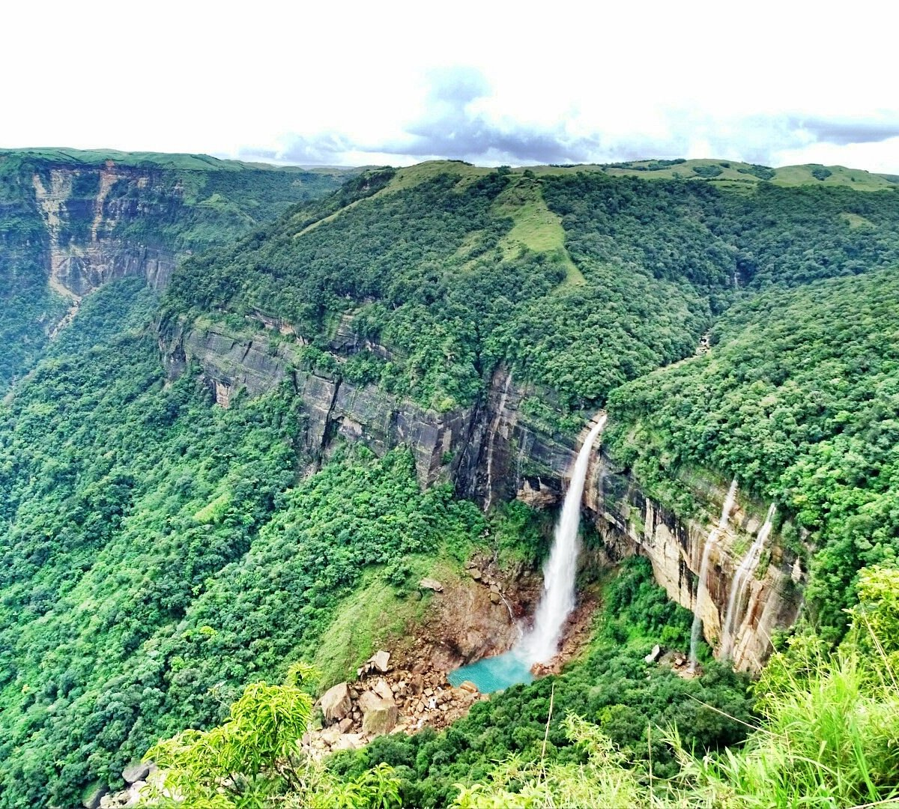
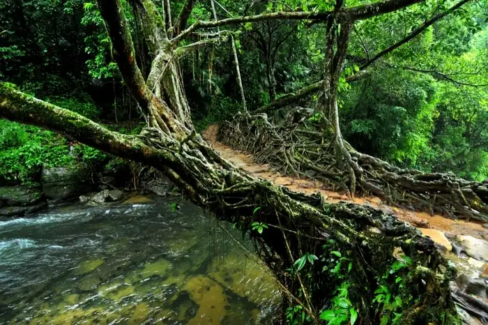
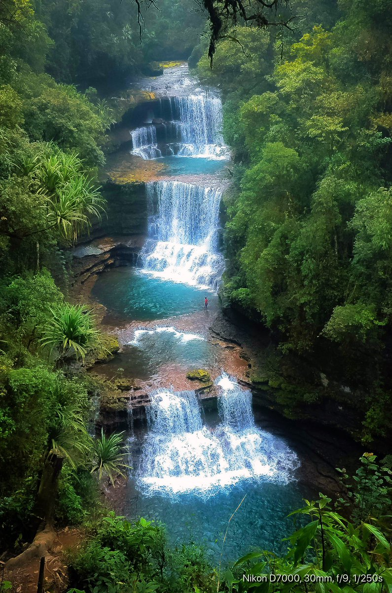
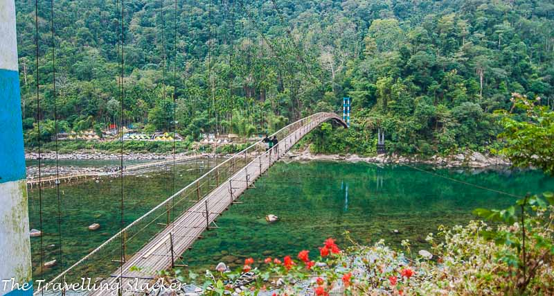

Places to visit in meghalaya

The Noh-Ka-Likai Falls
Nohkalikai Falls is the tallest plunge waterfall in India.Its height is 340 metres (1,115 ft). The waterfall is located in theIndian state of Meghalaya, near Cherrapunji, one of thewettest places on Earth. Nohkalikai Falls are fed bythe rainwater collected on the summit of acomparatively small plateau and decrease in power duringthe dry season, from December to February. Belowthe falls is a plunge pool with waterof an unusual shade of green.

The Living Root Bridge
A living root bridge is a type of simple suspension bridge formed of living plant roots by tree shaping.They are common in the southern part of the Northeast Indian state of Meghalaya. They are handmadefrom the aerial roots of rubber fig treesby the Khasi and Jaintia peoples of the mountainousterrain along the southern part of the Shillong Plateau.Most of the bridges grow on steep slopes of subtropicalmoist broadleaf forest between 50 and1,150 m (160 and 3,770 ft) above sea level.

The Weisawdong falls
The fall is situated some 60 km southwest of Shillong in East Khasi Hills district and is in close proximity to anothermajor waterfall, Dainthlen Falls. The name Wei Sawdongderives from the Khasi language (wei - resembling a pool,sawdong - square-shaped), spoken locally. Wei Sawdong isdifficult to access, and the trek to the waterfall is alongan out-and-back trail and challenging. The falls areespecially known for their bluish-green, crystal-clear water.

Shnongpdeng village
Shnongpdeng is an adventure destination with several activitiesbeing hosted in the vicinity there. Serving as a borderfor India from Bangladesh, the Umngot river isone of the main attractions and source of the wateractivities that are held there. Float on top of the crystal clear river and listen to the watersoothingly flow to Bangladesh. Plan an overnighttrip with your friends and let naturesink in into you while you enjoy a pleasantstay at the riverside camping site.
To know more destinations click
here